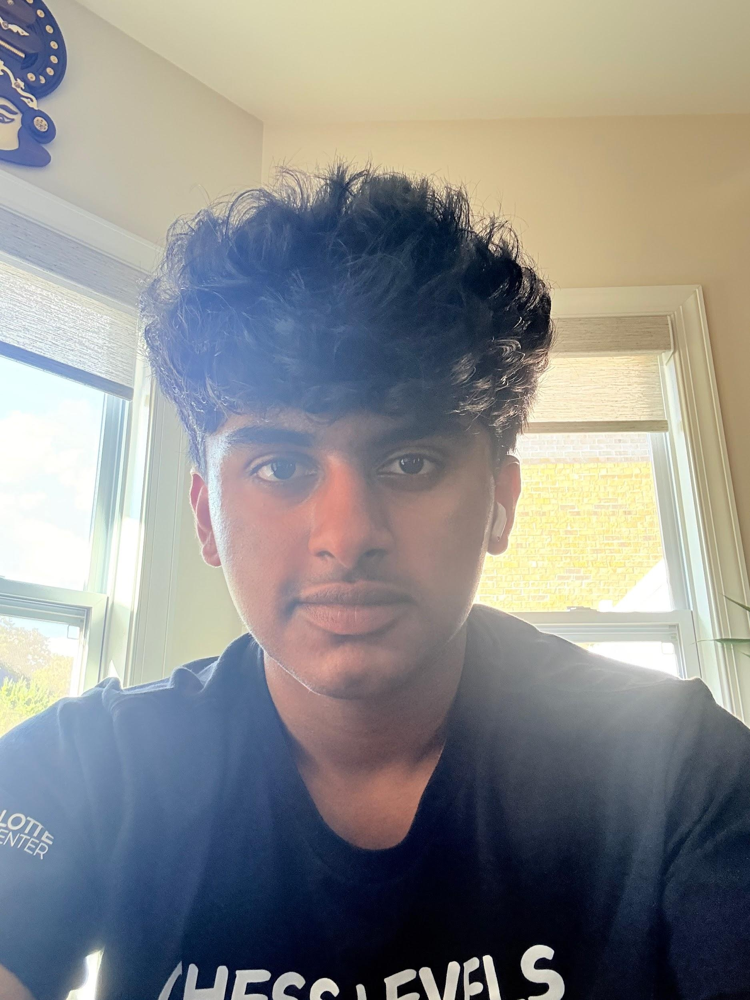

Lokruth Patil
Charlotte, North Carolina Chapter Secretary
Hi! I'm Lokruth, and I'm excited to be serving as Secretary for Hearts for Healing this year. I'll be helping keep things organized, from taking notes to making sure our events and ideas run smoothly. I joined Hearts for Healing because I love the idea of spreading kindness and giving back, and I can't wait to work with everyone to make a positive impact while also having fun together as a team!